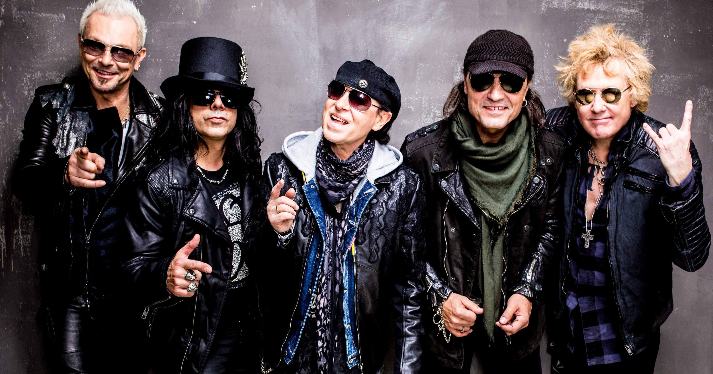

History
Scorpions are a German rock band formed in 1965 in Hanover by Rudolf Schenker. Since the band's inception, its musical style has ranged from hard rock to heavy metal The lineup from 1978 to 1992 was the most successful incarnation of the group, and included Klaus Meine (vocals), Rudolf Schenker (rhythm guitar), Matthias Jabs (lead guitar), Francis Buchholz (bass), and Herman Rarebell (drums). The band's only continuous member has been Schenker, although Meine has appeared on all of Scorpions' studio albums, while Jabs has been a consistent member since 1979, and bassist Paweł Mąciwoda and drummer Mikkey Dee have been in the band since 2003 and 2016 respectively.